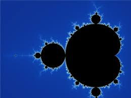
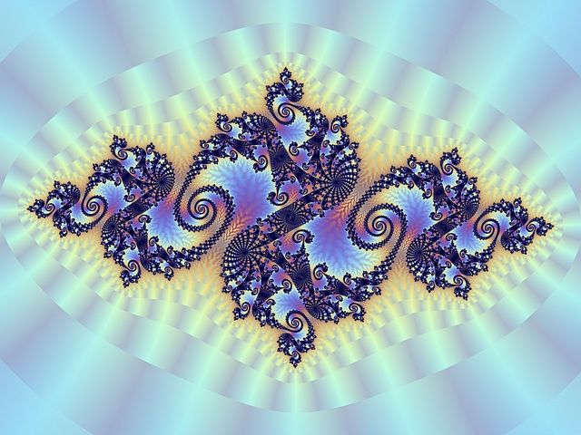
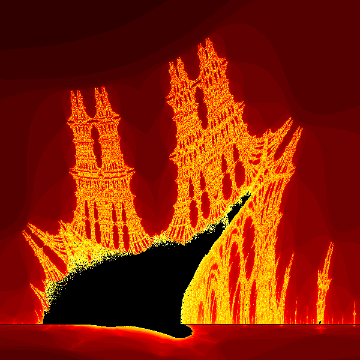

Mandelbrot Set
The Mandelbrot set is a set of complex numbers that produces a fractal shape when plotted. The formula used is:
z = z² + c
Julia Set
The Julia set is a fractal that is generated by iterating the function:
Zn+1 = Zn^2 + C
Where C is a fixed complex number, and Z is the complex number being iterated.
Burning Ship Fractal
The Burning Ship fractal is a variation of the Mandelbrot set, with the formula:
Zn+1 = (Re(Zn)^2 - Im(Zn)^2 + C) + i(2 * |Re(Zn) * Im(Zn)| + C)
Where the real and imaginary parts are treated with absolute value for the imaginary part.
